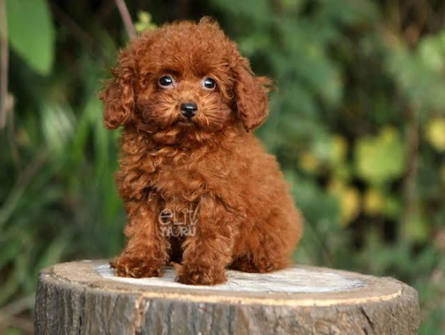
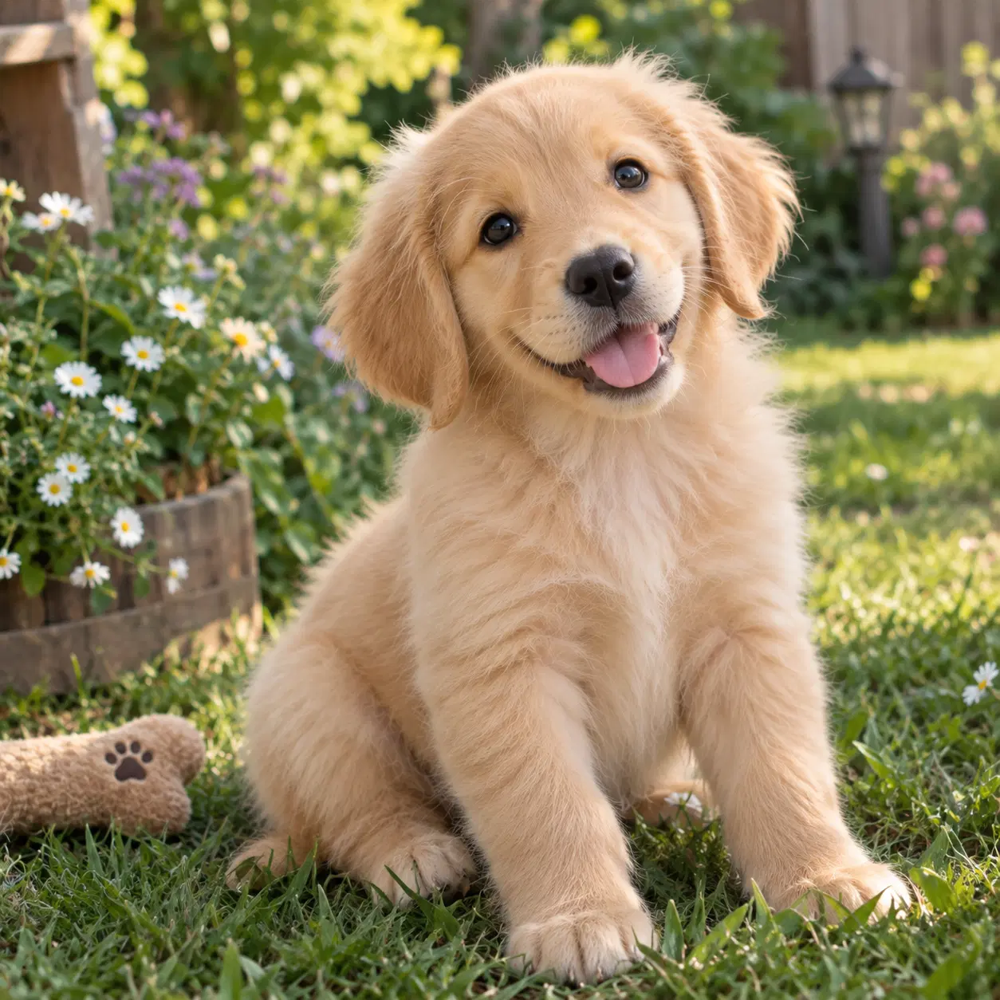
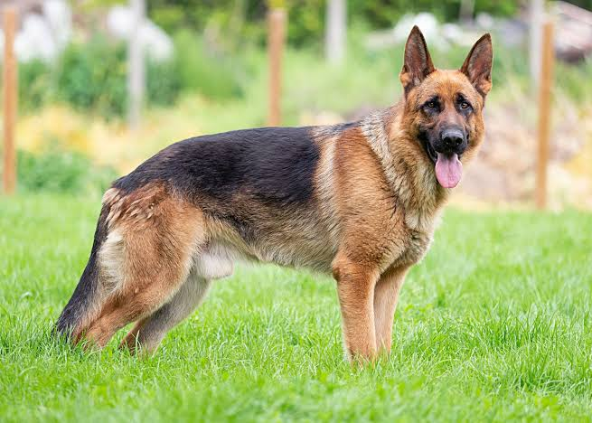
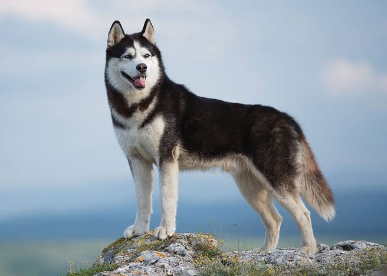
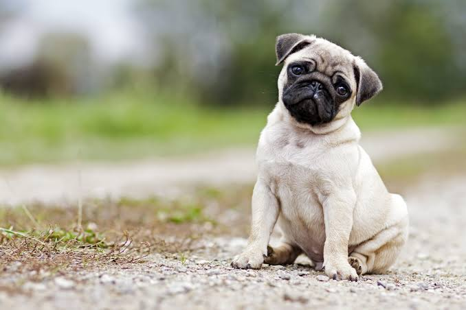
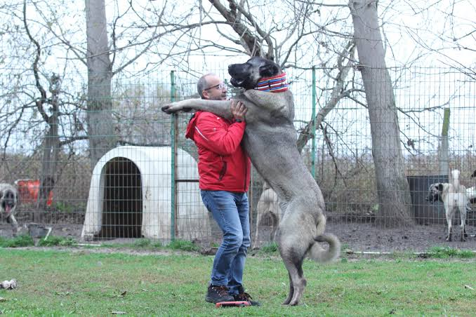

Kedilerle İlgili Diğer Siteye Git
Kuşlarla İlgili Diğer Siteye Git
Köpekler, insanların en eski ve en sadık dostlarından biridir. Zeki, sevecen ve sosyal hayvanlar olan köpekler, insanlarla güçlü bağlar kurabilirler. Bilimsel adları Canis lupus familiaris olan köpeklerin ortalama yaşam süresi 10-15 yıl arasında değişir.

Köpeklerin en gelişmiş özelliklerinden biri koku alma duyularıdır. İnsanlara göre çok daha güçlü bir koku alma yeteneğine sahiptirler. Bu nedenle kayıp insanları bulma ve arama-kurtarma çalışmalarında görev alabilirler.
Köpekler insanlarla iletişim kurmak için havlama, uluma, kuyruk sallama ve çeşitli beden hareketlerini kullanırlar. İnsanların ses tonlarını ve beden dillerini algılayarak duygularına tepki verebilirler.
Köpekler gün içinde uzun süre uyuyabilir ve dinlenebilirler. Uyurken rüya görebilirler. Uyku sırasında patilerini hareket ettirmeleri veya hafif sesler çıkarmaları bunun belirtileri olabilir.
Dünyada birçok farklı köpek ırkı vardır. Golden Retriever sevecenliği ve sosyal yapısıyla, Alman Kurdu zekâsı ve çalışkanlığıyla, Sibirya Kurdu enerjisi ve dayanıklılığıyla tanınır.

Köpeklerin sağlıklı büyüyebilmeleri ve yaşamlarını sürdürebilmeleri için dengeli beslenmeleri gerekir. Yaşlarına, boyutlarına ve sağlık durumlarına uygun mamalar tercih edilmelidir.
Köpeklerin sağlıklı ve mutlu yaşayabilmeleri için düzenli egzersiz yapmaları ve temiz bir ortamda yaşamaları önemlidir. Tüy, diş ve tırnak bakımları yapılmalıdır.
Köpekler eğitim sayesinde birçok komutu öğrenebilirler. Bazıları arama-kurtarma çalışmalarında, rehberlik hizmetlerinde ve güvenlik görevlerinde insanlara yardımcı olur.
Köpekler insanlara arkadaşlık eder ve günlük yaşamlarına mutluluk katarlar. Özellikle rehber köpekler görme engelli bireylere yardımcı olur.
Özellikleri: Dünyanın en popüler aile köpeklerinden biridir. Oldukça sevecen, oyuncu, zeki ve hoşgörülüdür. Çocuklarla ve diğer evcil hayvanlarla çok iyi anlaşır, eğitilmesi oldukça kolaydır.
Özellikleri: Yüksek zekası, sadakati ve koruma içgüdüsüyle öne çıkar. Arama-kurtarma, polis ve güvenlik görevlerinde sıkça tercih edilir. Sahibine son derece bağlıdır ve iyi bir eğitimle mükemmel bir koruyucu olur.

Özellikleri: Buz mavisi ya da farklı renkteki gözleri ve etkileyici kürküyle tanınır. Kızak köpeği kökenli olduğu için enerji seviyesi çok yüksektir. Özgürlüğüne düşkündür, havlamaktan ziyade ulumayı tercih eder ve soğuk havalara son derece dayanıklıdır.

Özellikleri: Basık yüzü, kırışık burnu ve kıvrık kuyruğuyla küçük ırkların en sevimlilerindendir. Ev/apartman yaşamına son derece uygundur. Enerjisi düşük, uykuyu ve sahibiyle koltukta vakit geçirmeyi seven, son derece sevecen bir kucak köpeğidir.

Özellikleri: Av köpeği geçmişinden dolayı koku alma duyusu muazzam gelişmiştir. Sürekli burnu yerde yeni kokular keşfetmeye bayılır. Neşeli, enerjik ve sosyal bir yapısı vardır; meraklı tavırlarıyla dikkat çeker.
Özellikleri: Türkiye'nin gururu olan heybetli bir sürü koruma köpeğidir. İri cüssesine rağmen ailesine ve çocuklara karşı son derece nazik ve koruyucudur. Kurt gibi yırtıcılara karşı sürüyü koruma yeteneği ve yüksek sadakati ile bilinir.
